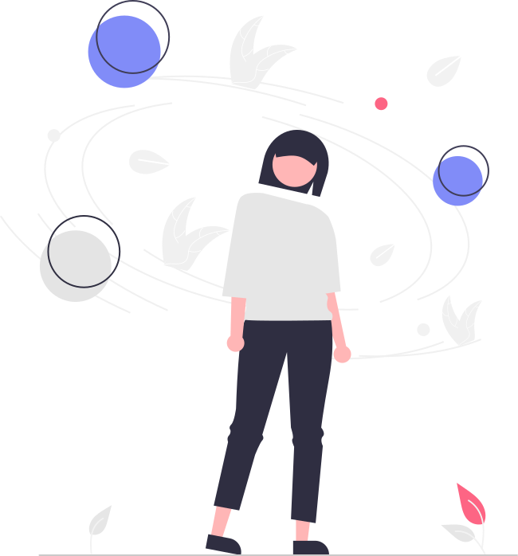
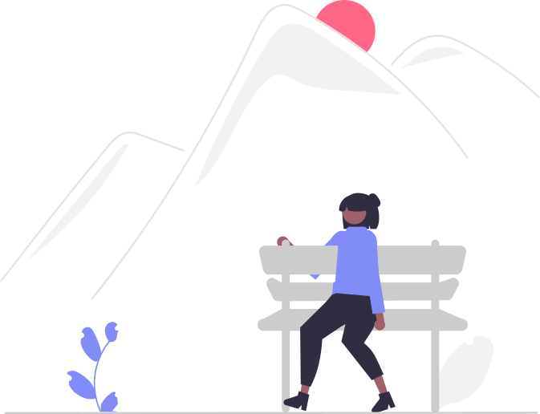
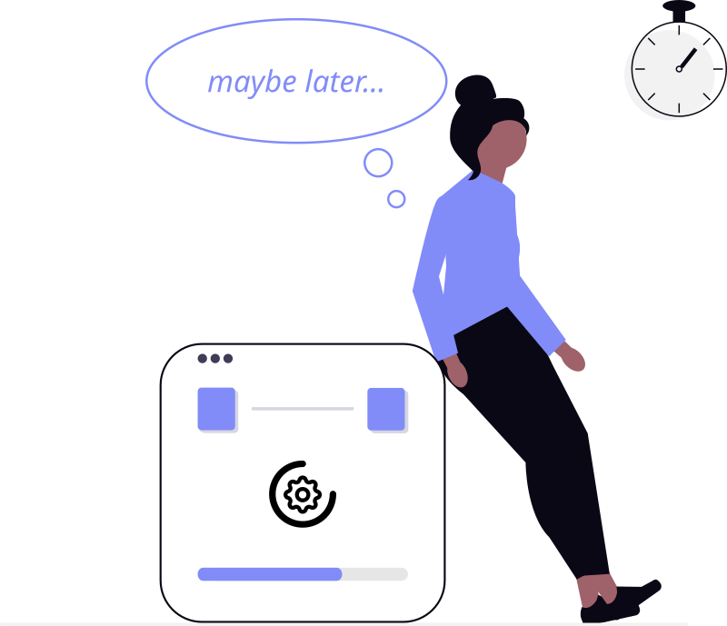

The familiar choice
At NovaBridge, you're a fresh manager with eight months under your belt. Your technical execution is solid, but the people side is newer territory.
You're a new manager.
Job aids and trainings can help, but managing people is never straightforward. A developer on your team has missed their sprint commitments for three consecutive weeks — and now you have to decide whether to act.
Which of these sounds more like you?
If Path B felt more familiar, or if Path A felt harder than it should — you're not alone.
Most managers have been there. It's not a character flaw. It's your brain doing exactly what it was designed to do.
Why friction feels like danger
Your brain doesn't distinguish between social conflict and physical danger. Avoidance isn't weakness — it's self-defense.
Click each tab to see how your brain turns good intentions into avoidance:

"I need to give tough feedback."
Your brain treats this like physical danger. The amygdala fires the same threat response that once protected you from predators — except now it activates when you open a feedback conversation.

"If I say nothing, it stays comfortable."
Your brain chooses silence as the safe path. It rewards avoidance with relief. The discomfort disappears — but only for you. The problem stays exactly where it is.

"I'll give it another week."
Your brain calls it "giving them space." Weeks pass. It rationalizes the delay as thoughtfulness — but it's just avoidance wearing a manager's vocabulary.
The Promotion Paradox
The problem isn't you — it's that your job has changed. As an individual contributor, avoiding conflict was low-risk. It may have even felt like the smart move. But what was harmless as an IC can quietly work against your team as a manager.
The role shift is universal, but how it shows up is personal. Next, you'll meet three managers who each found a different way to avoid the same conversation.